Dustin 这篇论文关注长上下文、大 batch 场景下 speculative decoding 的 target-model verification 阶段。论文入口为 arXiv:2606.24957，作者来自国立阳明交通大学、Technische Universitat Darmstadt 和 Cornell University；一作 WenHung Lee 与 Jian-Jia Chen 在 PDF 中标注为共同一作，主要通信信息来自国立阳明交通大学。arXiv 页面显示论文已被 ICML 2026 接收；本轮在 arXiv 入口未核验到独立代码或项目链接。论文的核心目标不是再训练一个更快的 draft model，而是让 target model 在验证多个草稿 token 时只加载最关键的一小部分历史 KV，同时尽量不改变输出质量。
在多 batch 长上下文 LLM 推理中，speculative decoding 虽然能把多个 draft token 合并给 target model 并行验证，但效率常被 verification bottleneck 限制：KV cache 加载主导延迟。已有压缩方法要么静态丢弃 token 并因 saliency shift 损失准确率，要么动态选择 token 却把昂贵的打分计算塞进 verification path。
1. 背景和问题
Speculative decoding 的基本思路是让一个更小或更快的 draft model 先生成一段候选 token，再由 target model 一次性验证这段候选。这个范式在普通短上下文里主要节省自回归逐 token 调用 target model 的成本；但 Dustin 讨论的是另一个更苛刻的 regime：上下文长度达到 16K、32K，batch size 也不小，target model 每次验证都要访问完整的历史 KV cache。此时 target model 的 FLOPs 不一定是唯一瓶颈，反而是从显存读取 KV 的带宽、缓存组织和 attention kernel 能否避免全量访问，决定了端到端延迟。论文把这个瓶颈明确限定在 verification，而不是 draft generation：draft model 仍然可以用已有 sparse-KV drafting 或 MagicDec 风格的配置减少成本，但 target model 如果仍用 full KV 来验证，每一轮就要把几万 token 的历史上下文重新卷入 attention。
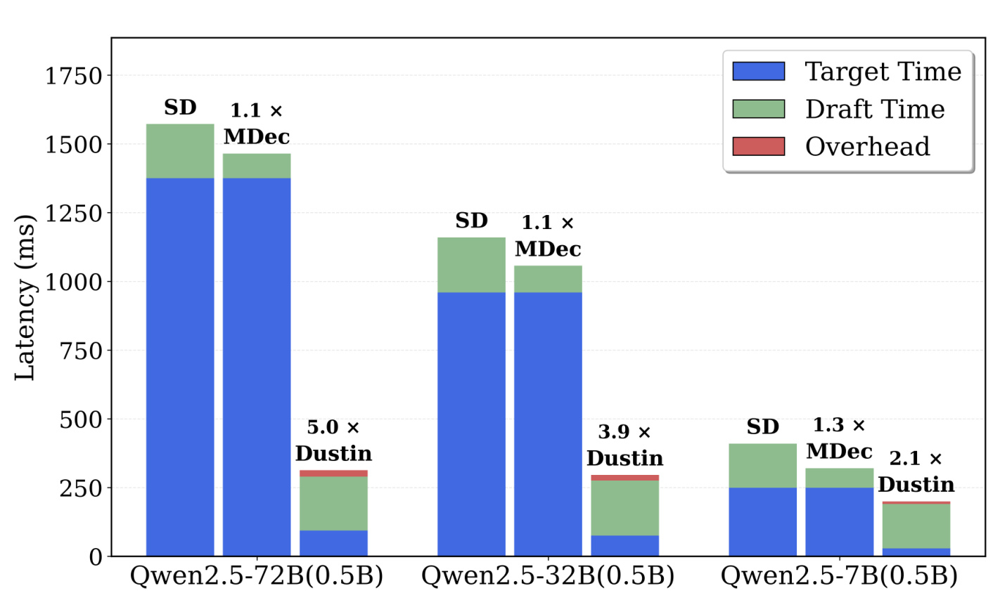
Figure 1 是论文开场最重要的动机证据。图中把一次 speculative decoding step 的延迟拆成 target time、draft time 和 overhead，并在 32k input、batch size 16 下比较 classic SD、MagicDec 和 Dustin。Qwen2.5-72B/0.5B 这组里，classic SD 与 MagicDec 的柱子主要由蓝色 target time 构成，说明验证阶段加载和计算完整 KV 仍然非常重；Dustin 的柱子明显更低，且红色 overhead 只占很小一段。中间的 Qwen2.5-32B/0.5B 也呈现同样趋势，Dustin 相对 classic SD 有 3.9 倍左右延迟优势。右侧 Qwen2.5-7B/0.5B 的绝对延迟更小，但仍能看到 target verification 是主要可压缩项。这个图支撑了一个关键判断：长上下文 speculative decoding 的优化重点不只是让 draft 更快，而是让 target 验证不再读取完整历史 KV。
现有 KV cache compression 方法并不能直接解决这个问题。静态 eviction 例如只保留 attention sink 和最近窗口，确实能减少访问量，但它一旦把远处 token 永久丢掉，就容易遇到 saliency shift：当前重要的 token 和下一段验证窗口里重要的 token 可能不同。对于普通单步生成，上一 token 的 attention 还能作为近似；对于 speculative decoding，target model 一次验证多个未来 token，真正要保留的是一个 verification window 里共同重要的历史位置。动态选择方法则走另一个方向：每次都重新算重要性，再临时选择 KV。问题是，如果动态选择要 materialize 全层全头 attention score，甚至在每个 verification step 都重新排序全上下文 token，那么它本身就变成新的 verification-path overhead，抵消 sparse attention 的收益。
论文把这个权衡拆成两个可测量的信号：target model 的 historical attention，以及 draft model 在生成候选 token 时自然产生的 lookahead attention。前者来自 target 最近一次 forward pass，对 target 自己的注意力分布更忠实；后者来自 draft 的未来 token 生成，天然带有 lookahead，但 draft 与 target 之间存在模型尺度、层结构和 token saliency 的错配。Dustin 的贡献就在于先实证说明两种单信号策略都不够稳，再用 hybrid selection 把它们组合起来。
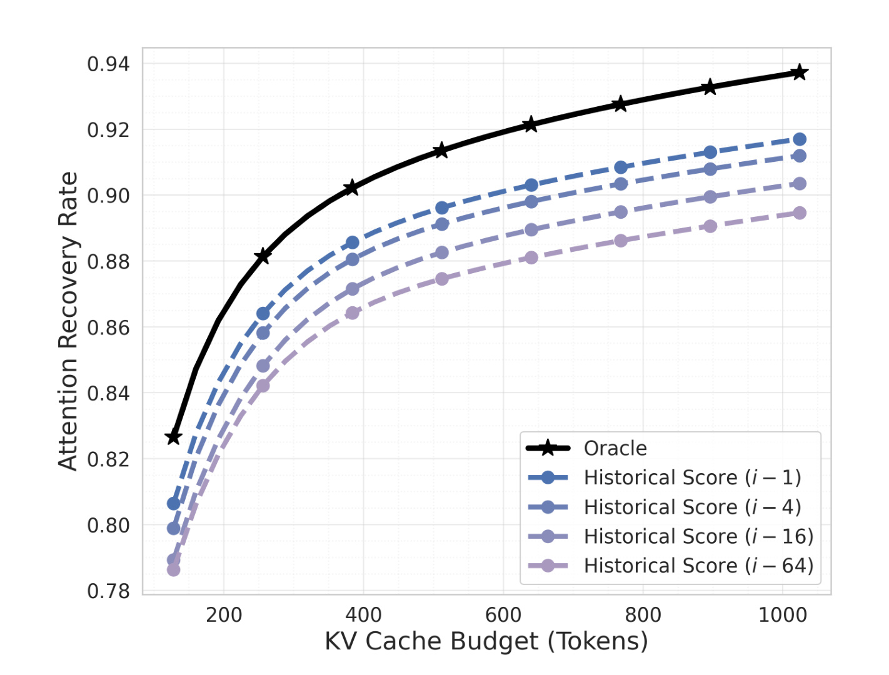
Figure 2 检查 target historical attention 的短期稳定性。横轴是 KV cache budget，纵轴是 Attention Recovery Rate，即被选中 KV token 覆盖了多少原始 full attention mass。黑色 oracle 曲线代表知道未来 verification window attention 后的理论上界；蓝紫色虚线则分别用 i-1、i-4、i-16、i-64 等历史步的 attention 来选择 token。可以看到 i-1 与 oracle 差距很小，论文正文给出 k=512 时最接近 oracle 的历史 attention 仅差约 1.04%。这说明 target history 不是无效启发式，它在短距离上能很好预测下一步 saliency。但曲线也显示随着历史距离变远，ARR 系统下降；而 speculative decoding 的 verification window 同时包含多个未来 draft token，所以单纯依赖历史注意力无法覆盖所有未来 saliency 变化。
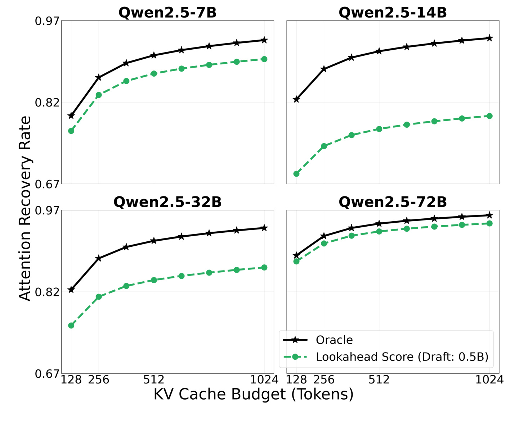
Figure 3 反过来评估 draft lookahead。每个子图对一个 Qwen2.5 target scale，黑色 oracle 是 target 自己未来 attention 的上界，绿色虚线是 0.5B draft model 的 lookahead score。Qwen2.5-7B 和 72B 中 draft lookahead 与 oracle 的距离相对可控，但 14B 和 32B 出现明显 gap；在小 budget 处，lookahead 只保留很少一部分 target 真正重视的 attention mass。这个结果很重要，因为它否定了“draft 看到了未来 token，所以直接用 draft attention 就够了”的简单说法。draft 的未来感知是真的，但它不是 target 的未来注意力；模型尺度、层分布和训练差异会让同一个历史 token 在 draft 与 target 中的 saliency 排名不一致。
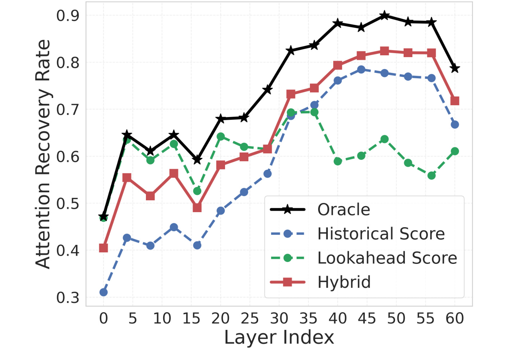
Figure 4 是 Dustin 设计 hybrid 策略的转折点。横轴是 layer index，纵轴是 ARR，黑色 oracle 之外有三条策略曲线：historical score、lookahead score 和 hybrid。蓝色历史信号在深层逐渐接近 oracle，绿色 lookahead 在早层有优势但中后层不稳定；红色 hybrid 在多数层上压过单信号策略，并在高层保持更接近 oracle 的恢复率。换句话说，论文不是简单平均两个分数，而是在实证上发现两类信号服务于不同层段：draft lookahead 带来未来 token 视角，target history 保留 target 自身深层语义一致性。Dustin 后续的 token selection 和 head selection 都围绕这个互补性展开。
把这组背景放回长上下文 LLM 推理，Dustin 要解决的问题可以概括为：在 target model 验证 draft token 时，如何临时构造一个足够小的 KV verification set，使它既覆盖当前窗口真正重要的历史 token，又不需要为这个选择过程付出全 attention scoring 的代价。它不试图替代 speculative decoding 的验收机制，也不改变 target model 的概率分布定义；它是在 target-side verification 内部做稀疏化，目标是减少每次 attention 访问的 active KV token 数量，同时把输出质量损失控制到接近不可见。
2. 方法
2.1 用 ARR 把“稀疏验证质量”变成可优化目标
Dustin 首先需要一个比最终任务分数更细的中间指标。最终 LongBench accuracy 或 PG-19 throughput 太慢，也不适合用来搜索每个 target-draft pair 的 attention source、layer 和 budget。论文使用 Attention Recovery Rate 来衡量一个 KV selection policy 保留了多少 full attention mass。设第 i 个 decoding step 的有效历史 KV 位置集合为 V_i，full-cache attention 在位置 j 上的归一化权重为 A_{i,j}，策略 pi 选出的 KV 子集为 K_i^pi，则：
符号解释：A_{i,j} 是 target model 在 full KV 条件下对第 j 个历史位置的注意力权重；K_i^pi 是某个稀疏策略选择保留的历史 token 集合；ARR_i(pi) 就是这些被保留位置承载的 attention mass。它的直觉很直接：如果稀疏 KV 选择正好覆盖了 target 原本最关注的位置，ARR 接近 1；如果选错了，ARR 下降，target sparse forward 的 logits 也更可能偏离 full-cache reference。论文附录进一步用 ARR 与 output-logit KL divergence 的负相关来证明这个代理指标合理。
Speculative decoding 不只验证一个 token，而是验证一个长度为 w 的 draft window。因此 Dustin 使用 windowed ARR：
符号解释：w 是一次 verification window 的 token 数，s 枚举窗口内第 s 个 future step。这个式子把策略 pi 对多个未来 token 的保留质量平均起来。它解释了为什么单步 historical attention 不一定够用：如果只看 A_{i-1,.}，可能覆盖当前 token 的 saliency，却漏掉 i+2 或 i+3 的重要历史位置。
为了衡量上界，论文定义了 SD oracle：它假设选择前已经知道未来 w 步的 attention，于是先对每个历史位置求平均未来 attention，再取 Top-K：
符号解释：\bar{A}_{i,j}^{(w)} 是历史位置 j 在整个 verification window 里的平均真实重要性；TopK_k 取预算 k 下最重要的 token。这个 oracle 不能在线使用，因为未来 target attention 在验证前不可知，但它提供了评价 historical、lookahead 和 hybrid 策略的参照。Dustin 的搜索并不是直接优化下游 accuracy，而是寻找能在 ARR 上接近这个 oracle、同时足够便宜的配置。
2.2 hybrid attention aggregation：把 draft 的未来感和 target 的忠实度合并
进入正式方法后，Dustin 维护两个来源的 attention tensor：draft model 在生成 Gamma 个 speculative token 时产生的 lookahead attention，以及 target model 最近一次生成 token 时留下的 historical attention。论文把它们先聚合成两个全局 token importance vector：
符号解释：n 是历史上下文中的 token 位置；H_d、L_d 分别是 draft model 的 head 数和 layer 数；Gamma 是 draft window 的长度；H_t、L_t 是 target model 的 head 数和 layer 数。S_Draft 聚合 draft 对未来多个候选 token 的注意力，承担 lookahead 信号；S_Target 聚合 target 最近 token 的 attention，承担 target 历史一致性信号。论文选择 global index set，而不是像 SpecAttn 一样为每层单独选 token，原因是 target verification 中按层维护不同 KV index 会增加检索和 kernel 调度复杂度。
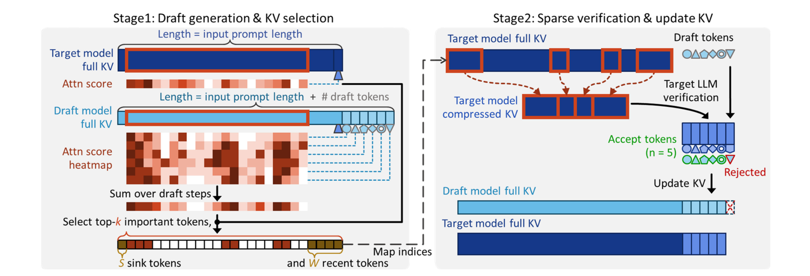
Figure 5 把这个公式展开成完整推理流程。左侧 Stage1 是 draft generation 与 KV selection：target model full KV 和 draft model full KV 都能产生 attention score；draft 对多个未来 token 的 heatmap 会沿 draft steps 求和，target 的最近 attention 也参与全局打分。底部的 protected tokens 由 attention sink 和最近窗口组成，表示 Dustin 不会完全依赖打分而丢掉结构性安全位置。右侧 Stage2 是 sparse verification：target model 只把选中的历史 KV 组成 compressed KV，用它验证 draft tokens；被接受的 token 更新回 target KV，被拒绝的 token 丢弃。这个图还说明 Dustin 是 verification-time sparse access，而不是永久删除历史上下文：全量历史仍存在于缓存管理视角中，只是当前 verification step 不加载全部 KV。
2.3 verification set 的构造：sink/window、draft top-m、target top-k-m
在固定预算 k 下，Dustin 构造 verification set 的逻辑分三层。第一层保护 attention sink 和最近窗口，第二层用 draft lookahead 选 m 个 token，第三层用 target historical attention 填满剩余预算：
符号解释：I_sink 是少量 attention sink token，I_window 是最近 token 窗口；m 控制 draft lookahead 在总预算中的份额；k 是 target-side sparse KV budget。I_draft 优先保留 draft 认为未来候选 token 会关注的位置，I_target 则补充 target 历史上稳定重要的位置。这个构造对应 Figure 4 的观察：早层和未来 token 相关的变化需要 draft 视角，深层和 target 自身语义一致性需要历史视角。Dustin 的关键不是把 KV cache 压到一个固定小窗口，而是为每个 verification step 选择一个临时、混合来源、全层共享的 Iverify。
这个设计也暴露了一个边界条件：m 是一个预算分配参数，而不同任务对 draft lookahead 和 target history 的依赖可能不同。论文主实验用离线调优得到的固定 m，在平均意义上表现稳定；附录指出如果能做 input-aware dynamic m selection，可能进一步接近 oracle。也就是说，Dustin 已经把单信号策略推进到 hybrid，但仍没有完全解决“不同任务动态偏好不同来源”的问题。
2.4 SRH sparse estimation：避免选择过程变成新瓶颈
如果为了得到 S_Draft 和 S_Target，每次都 materialize draft 与 target 的全层全头 attention，复杂度会很高。论文把这个开销写成：
符号解释：N 是历史上下文长度，Gamma 是 draft token 数，H_d L_d 和 H_t L_t 分别是 draft 与 target 的 head-layer 数量。长上下文下 N 很大，若每次 verification 都对所有 head、所有 layer、所有历史 token 算分，重要性估计会变成比 sparse attention 本身还贵的操作。Dustin 因此引入 Semantic Retrieval Heads，把全 attention score reconstruction 限制到少数“语义检索头”上。
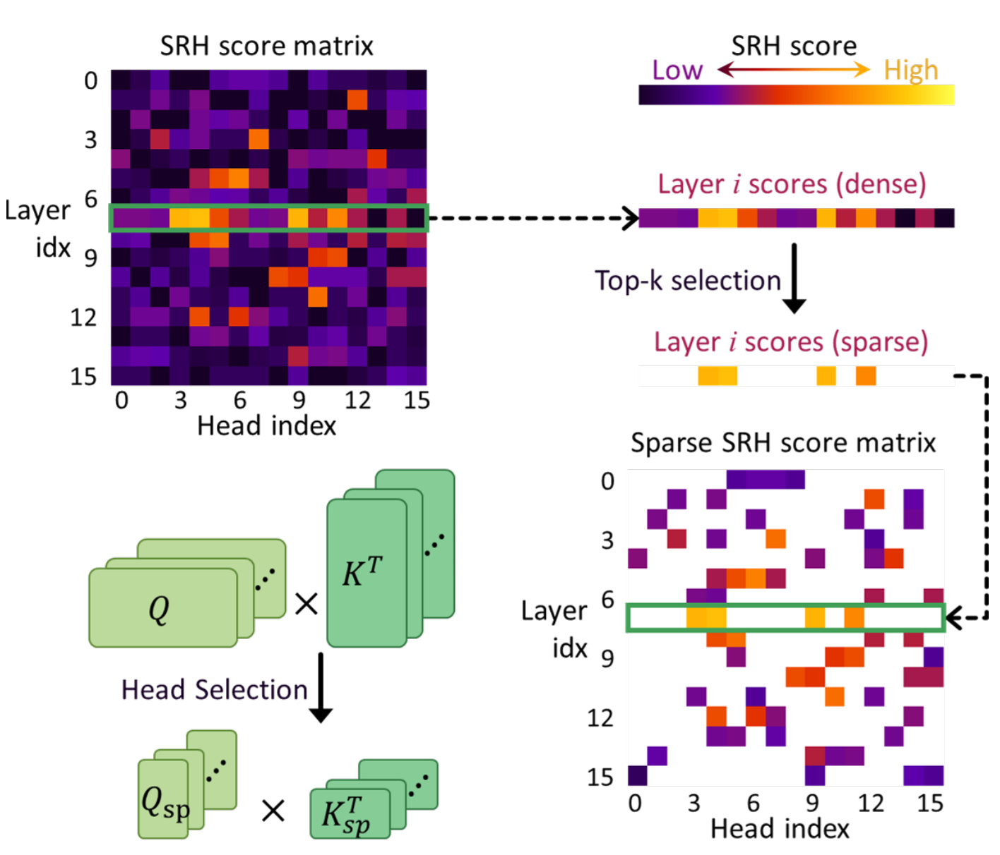
Figure 6 展示了 SRH 的选择过程。左上是完整 SRH score matrix，横轴是 head index，纵轴是 layer index；系统先在每层得到稠密分数，再做 Top-K selection，把真正需要计算的头保留下来，形成右下角的 sparse SRH score matrix。左下角的 Q 与 K^T 表示 attention score 仍由 query-key 计算产生，但在线阶段只对 Q_sp 与 K_sp^T 对应的稀疏 head 子集做重算。这个图解释了 Dustin 与普通动态 KV selection 的差别：它不是在 verification path 上完整重建 attention map，而是先通过离线 profiling 识别可复用的 SRH，再让在线打分只付出很小开销。
论文的配置搜索分三步。第一步贪心找 target layer：在 target historical signal 中选出最能提高 ARR 的层，作为稳健基础。第二步贪心追加 draft layer：固定 target 层后，依次加入能提升 hybrid ARR 的 draft 层。第三步用 Optuna 调 m，也就是 draft budget 与 target budget 的分配。搜索目标不是直接的 LongBench accuracy，而是前面定义的 windowed ARR；这样每个 target-draft model pair 可以离线完成一次配置，之后在部署中复用。作者报告的 Dustin-specific porting overhead 在 7B 到 72B 模型对上是 11.9 到 35.4 分钟量级，这属于一次性成本，而不是每个 query 或每个任务都要重做。
3. 实验结果
实验分三条主线：第一，LongBench accuracy 检查稀疏 target verification 会不会破坏长上下文任务质量；第二，PG-19 story continuation 检查 end-to-end decoding throughput；第三，ablation 和 overhead 分析确认 hybrid attention 与 SRH estimation 是否必要。模型覆盖 Qwen2.5 和 Llama3 系列，主文突出 Qwen2.5-72B 与 Llama-3.3-70B；效率实验在 H200 上运行，使用 bfloat16，并让 speculative baselines 尽量共享 target-draft pair、draft depth 和 FlashAttention v2 后端，减少实现差异带来的混淆。
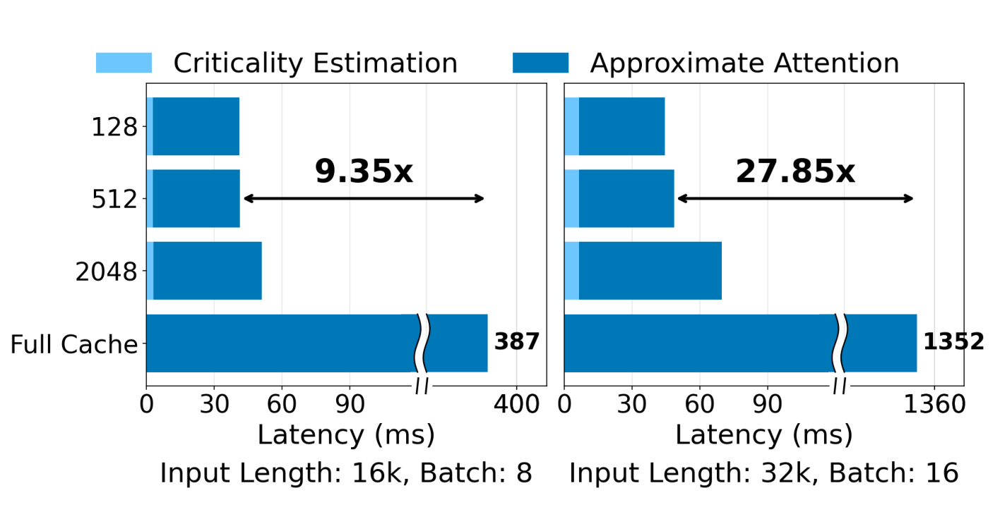
Figure 7 先把速度拆到 target verification self-attention 层。图左是 16k input、batch 8，图右是 32k input、batch 16；Full Cache 是 baseline，Dustin 被拆成浅蓝色 Criticality Estimation 和深蓝色 Approximate Attention。可以看到在 16k/batch 8 下，固定 512-token KV budget 带来 9.35 倍 self-attention speedup；到 32k/batch 16 时，speedup 上升到 27.85 倍。这个趋势说明 Dustin 的收益来自长上下文和大 batch 下的内存带宽压力：full cache 的蓝色条随着 workload 放大而很长，Dustin 只访问 512 个 selected KV token，所以 approximate attention 成本增长慢。浅蓝色估计开销可见但很小，表明 SRH scoring 没有吃掉 sparse attention 的主要收益。
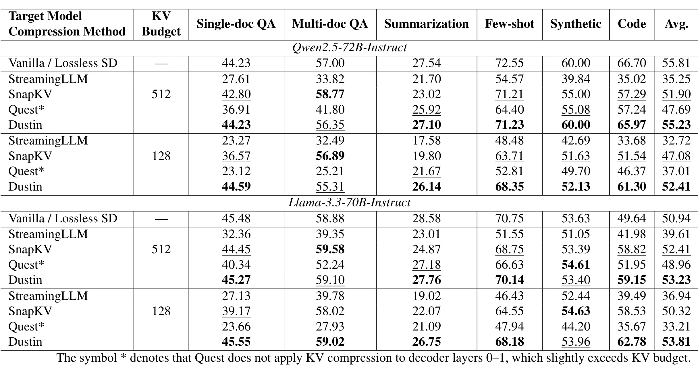
Table 1 是质量侧最核心的结果。它在两个严格 KV budget（512 和 128 tokens）下比较 StreamingLLM、SnapKV、Quest 与 Dustin，并以 Vanilla / Lossless SD 作为 full target computation 参考。Qwen2.5-72B-Instruct 上，full baseline 平均分是 55.81，Dustin 在 512 budget 下是 55.23，基本接近；同预算下 StreamingLLM 只有 35.25，Quest 是 47.69，SnapKV 是 51.90。更紧的 128 budget 下，Dustin 平均分 52.41，虽然低于 full，但仍显著高于 StreamingLLM 32.72、Quest 37.01 和 SnapKV 47.08。Llama-3.3-70B-Instruct 上也类似，Dustin 在 512 和 128 下的平均分分别为 53.23 和 53.81，甚至高于表中 lossless baseline 的 50.94，这可能包含评测噪声或 speculative path 差异，但至少说明 Dustin 没有出现静态 eviction 那种系统性崩坏。读这张表要注意两点：Dustin 的优势不是每个子任务都第一，而是平均质量稳定；Quest 带星号表示它没有压缩 decoder layer 0-1，预算略超，因此它的对比还偏宽松。
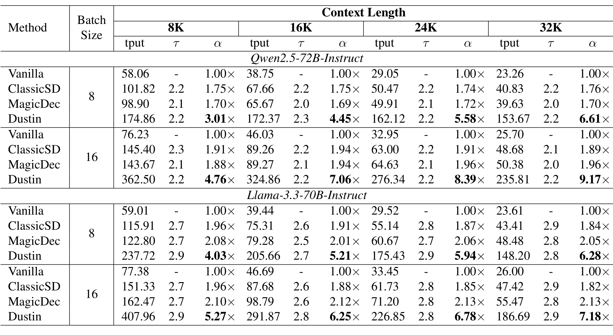
Table 2 把速度落到 PG-19 的长上下文 story continuation。指标里 tput 是 decode-stage tokens/s，tau 是每步平均接受 token 数，alpha 是相对 Vanilla 的速度比。Qwen2.5-72B-Instruct batch 16、32K context 下，Vanilla 只有 25.70 tokens/s，ClassicSD 48.68，MagicDec 50.38，而 Dustin 达到 235.81，alpha 为 9.17 倍；batch 8、32K 下 Dustin 也有 153.67 tokens/s 和 6.61 倍。Llama-3.3-70B-Instruct 上，batch 16、32K 的 Dustin 是 186.69 tokens/s、7.18 倍，仍明显高于 MagicDec 的 55.47 tokens/s、2.13 倍。这个表说明 Figure 7 的 self-attention speedup 没有停留在 kernel 层，而是转化成了端到端 decode throughput。tau 约在 2.2 到 2.9 之间，表示加速不只是接受更多 token，而是 target verification 的每步成本被压下来了。
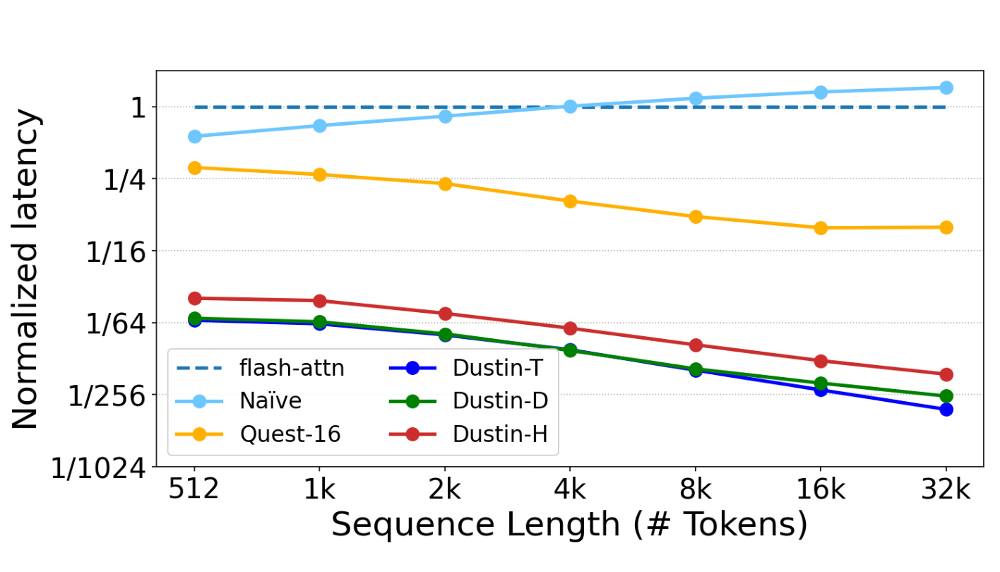
Figure 8 解释为什么 Dustin 没有被 dynamic selection overhead 拖垮。纵轴是 normalized latency，横轴是 sequence length，虚线 flash-attn 约等于 full-cache self-attention 的归一化基准。浅蓝色 Naive 随上下文增长甚至超过 1，意味着如果全头全层 materialize attention score，重要性估计本身会比 full attention 更慢；橙色 Quest-16 随长度增加下降，但仍明显高于 Dustin 系列。Dustin-T、Dustin-D 和 Dustin-H 都在低位置，尤其 16K 到 32K 处接近 1/128 到 1/256 量级。Dustin-H 比单信号略贵，因为它融合 target 与 draft 两边的选定头，但仍处在很小的开销区间。这个图支撑了 SRH 的必要性：没有 sparse estimation，hybrid attention selection 的理论优势无法转化为系统速度。
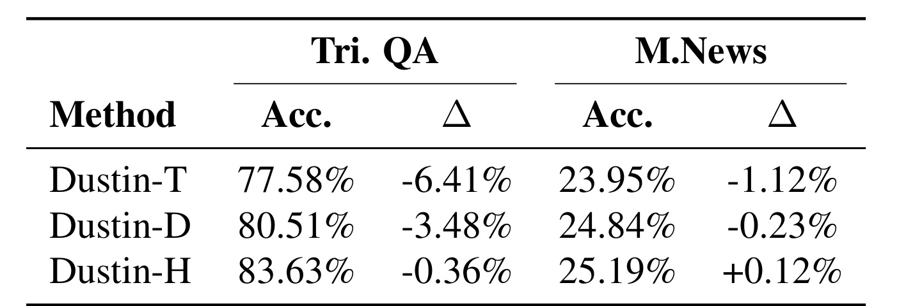
Table 3 是一个小但信息密度高的 hybrid 消融。Dustin-T 只用 target historical attention，Dustin-D 只用 draft lookahead，Dustin-H 是完整 hybrid。TriviaQA 上，Dustin-T 的 accuracy 是 77.58%，相对 FullKV 掉 6.41%；Dustin-D 是 80.51%，掉 3.48%；Dustin-H 达到 83.63%，只掉 0.36%。MultiNews 上，Dustin-T 掉 1.12%，Dustin-D 掉 0.23%，Dustin-H 反而是 +0.12%。这组数字对应前文 Figure 2-4 的机制解释：单独 target history 会漏掉未来 verification window 里的变化，单独 draft lookahead 又可能和 target saliency 不一致；hybrid 不保证每个任务都绝对最优，但在这两个代表性任务上显著降低了单信号策略的波动。
综合 Table 1、Table 2、Figure 7、Figure 8 和 Table 3，可以把 Dustin 的实验结论拆成三层。第一层是质量：在 LongBench 这种长上下文多任务集合里，Dustin 在 512-token budget 下接近 full verification，在 128-token budget 下也比 streaming retention 和 page-level selection 更稳。第二层是速度：在 PG-19 32K/batch 16 的大模型场景里，Qwen2.5-72B 达到 9.17 倍 end-to-end decoding speedup，self-attention 层达到 27.85 倍。第三层是方法归因：hybrid attention 解决了单信号不稳，SRH sparse estimation 解决了动态选择的在线开销。三层合起来，才构成论文的完整主张；如果只看 throughput，可能误以为它牺牲了 accuracy；如果只看 ARR，可能看不出系统是否真的快。
不过实验也有几个需要谨慎读的地方。其一，Dustin 的 KV budget 在主实验中常设为 512，适用于当前评测场景，但更长上下文、更复杂 retrieval-heavy task 或多轮 agent 记忆场景可能需要不同预算。其二，论文没有开源实现链接，SpecAttn 对比也是作者基于 Dustin codebase 重实现的风格化 baseline，因此复现实验需要等待代码或重建系统。其三，Dustin 不像永久 eviction 那样减少整体 KV cache footprint，它只是让当前 verification step sparse access；如果系统瓶颈是总显存容量而不是访问带宽，Dustin 不能单独扩展最大可承载上下文长度。
4. 总结
Dustin 的价值在于把 long-context speculative decoding 的 target verification 问题拆得很清楚：full KV verification 太慢，静态 eviction 太粗，动态 selection 太贵；因此需要一个能利用未来信号、又能忠于 target model、还不把在线估计变成新瓶颈的 sparse verification policy。论文提出的 hybrid attention aggregation 解决“选哪些 token”的问题，SRH sparse estimation 解决“如何便宜地选”的问题，ARR 则提供了贯穿机制分析、离线搜索和质量解释的统一代理指标。对大模型推理系统而言，这是一篇偏系统优化的论文，但它不是纯 kernel trick，而是把注意力保真、speculative window、模型对齐和 KV 访问模式连在了一起。
我的判断是，Dustin 最适合的落地点是已经采用 speculative decoding、并且 target verification 受长上下文 KV 访问拖累的服务。典型例子包括长文续写、长文问答、代码库上下文推理、多文档 summarization，以及推荐/搜索场景里的长上下文 reranker 或用户历史理解模块。它对短上下文、小 batch 或 target model 很小的场景不一定划算，因为离线 SRH profiling、hybrid budget tuning 和在线 sparse KV retrieval 都有实现复杂度；只有当 full-cache verification 已经明显成为 bandwidth bottleneck，收益才会显著。
局限至少有四点。第一，m 是离线调好的固定预算比例，附录已经显示不同任务对 target history 和 draft lookahead 的偏好不同，未来需要 input-aware 或 task-aware 的动态分配。第二，SRH 选择需要每个 target-draft pair 做一次 profiling，虽然作者报告几十分钟内可完成，但真实生产系统里模型版本频繁更新时仍是维护成本。第三，Dustin 不降低完整 KV cache 的常驻显存，因此它不能替代 eviction 或 paging 来解决最大上下文容量问题。第四，实验主要围绕 Qwen2.5、Llama3、PG-19 和 LongBench，尚不清楚在工具调用、多轮 agent、检索增强生成或者强结构化输出任务中，draft lookahead 与 target history 的互补关系是否仍然稳定。
后续我会重点跟进三个方向。第一，看作者是否释放代码或 kernel 实现，因为 sparse verification 的真实收益高度依赖 KV index gathering、attention kernel 与 batching 调度。第二，关注 dynamic m selection：如果能根据 prompt 类型、retrieval density 或 early attention statistics 调整 draft/target budget，Dustin 可能更接近 oracle。第三，把 Dustin 和 KV eviction/paging 结合起来看：Dustin 负责当前 verification step 的 active KV 访问，eviction 或 offload 负责总缓存容量，二者并不冲突，组合后才可能同时解决 latency 与 VRAM footprint。